import shutil
from pathlib import Path
import matplotlib.pyplot as plt
import numpy as np
import pandas as pd
from ribasim import Allocation, Model, Node, Solver
from ribasim.nodes import (
basin,
continuous_control,
discrete_control,
flow_boundary,
level_boundary,
level_demand,
linear_resistance,
manning_resistance,
outlet,
pid_control,
pump,
tabulated_rating_curve,
user_demand,
)
from shapely.geometry import PointExamples
1 Basic model with static forcing
datadir = Path("data")
shutil.rmtree(datadir, ignore_errors=True)model = Model(starttime="2020-01-01", endtime="2021-01-01", crs="EPSG:4326")Setup the basins:
time = pd.date_range(model.starttime, model.endtime)
day_of_year = time.day_of_year.to_numpy()
seconds_per_day = 24 * 60 * 60
evaporation = (
(-1.0 * np.cos(day_of_year / 365.0 * 2 * np.pi) + 1.0) * 0.0025 / seconds_per_day
)
rng = np.random.default_rng(seed=0)
precipitation = (
rng.lognormal(mean=-1.0, sigma=1.7, size=time.size) * 0.001 / seconds_per_day
)
# Convert steady forcing to m/s
# 2 mm/d precipitation, 1 mm/d evaporation
basin_data = [
basin.Profile(area=[0.01, 1000.0], level=[0.0, 1.0]),
basin.Time(
time=pd.date_range(model.starttime, model.endtime),
drainage=0.0,
potential_evaporation=evaporation,
infiltration=0.0,
precipitation=precipitation,
),
basin.State(level=[1.4]),
]
basin1 = model.basin.add(Node(1, Point(0.0, 0.0)), basin_data)
basin3 = model.basin.add(Node(3, Point(2.0, 0.0)), basin_data)
basin6 = model.basin.add(Node(6, Point(3.0, 2.0)), basin_data)
basin9 = model.basin.add(Node(9, Point(5.0, 0.0)), basin_data)Setup linear resistance:
linear_resistance10 = model.linear_resistance.add(
Node(10, Point(6.0, 0.0)),
[linear_resistance.Static(resistance=[5e3])],
)
linear_resistance12 = model.linear_resistance.add(
Node(12, Point(2.0, 1.0)),
[linear_resistance.Static(resistance=[3600.0 * 24.0 / 100.0])],
)Setup Manning resistance:
manning_resistance2 = model.manning_resistance.add(
Node(2, Point(1.0, 0.0)),
[
manning_resistance.Static(
length=[900], manning_n=[0.04], profile_width=[6.0], profile_slope=[3.0]
)
],
)Set up rating curve nodes:
q = 10 / 86400 # 10 m³/day
tabulated_rating_curve4 = model.tabulated_rating_curve.add(
Node(8, Point(3.0, -1.0)),
[
tabulated_rating_curve.Static(
level=[0.0, 1.0],
flow_rate=[0.0, 0.6 * q],
)
],
)
tabulated_rating_curve5 = model.tabulated_rating_curve.add(
Node(5, Point(3.0, 1.0)),
[
tabulated_rating_curve.Static(
level=[0.0, 1.0],
flow_rate=[0.0, 0.3 * q],
)
],
)
tabulated_rating_curve8 = model.tabulated_rating_curve.add(
Node(4, Point(4.0, 0.0)),
[
tabulated_rating_curve.Static(
level=[0.0, 1.0],
flow_rate=[0.0, 0.1 * q],
)
],
)Setup pump:
pump7 = model.pump.add(Node(7, Point(4.0, 1.0)), [pump.Static(flow_rate=[0.5 / 3600])])Setup level boundary:
level_boundary11 = model.level_boundary.add(
Node(11, Point(2.0, 2.0)), [level_boundary.Static(level=[0.5])]
)
level_boundary17 = model.level_boundary.add(
Node(17, Point(6.0, 1.0)), [level_boundary.Static(level=[1.5])]
)Setup flow boundary:
flow_boundary15 = model.flow_boundary.add(
Node(15, Point(3.0, 3.0)), [flow_boundary.Static(flow_rate=[1e-4])]
)
flow_boundary16 = model.flow_boundary.add(
Node(16, Point(0.0, 1.0)), [flow_boundary.Static(flow_rate=[1e-4])]
)Setup terminal:
terminal14 = model.terminal.add(Node(14, Point(3.0, -2.0)))Setup the links:
model.link.add(basin1, manning_resistance2)
model.link.add(manning_resistance2, basin3)
model.link.add(
basin3,
tabulated_rating_curve8,
)
model.link.add(
basin3,
tabulated_rating_curve5,
)
model.link.add(
basin3,
tabulated_rating_curve4,
)
model.link.add(tabulated_rating_curve5, basin6)
model.link.add(tabulated_rating_curve8, basin9)
model.link.add(
tabulated_rating_curve4,
terminal14,
)
model.link.add(basin6, pump7)
model.link.add(pump7, basin9)
model.link.add(basin9, linear_resistance10)
model.link.add(level_boundary11, linear_resistance12)
model.link.add(linear_resistance12, basin3)
model.link.add(flow_boundary15, basin6)
model.link.add(flow_boundary16, basin1)
model.link.add(linear_resistance10, level_boundary17)Let’s take a look at the model:
model.plot()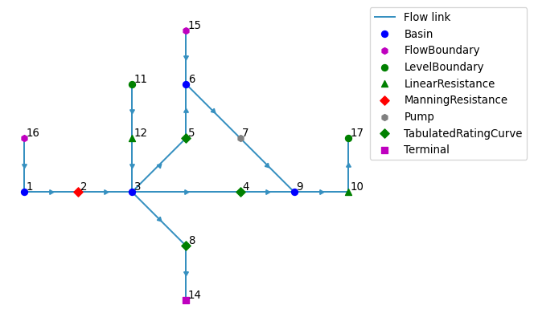
Write the model to a TOML and GeoPackage:
toml_path = datadir / "basic/ribasim.toml"
model.write(toml_path)PosixPath('data/basic/ribasim.toml')1.1 Running a model
Now run the model. You can open a terminal and run it from there. For example, to run the basic model, input:
ribasim basic/ribasim.tomlAfter running the model, read back the results:
df_basin = pd.read_feather(
datadir / "basic/results/basin.arrow", dtype_backend="pyarrow"
)
df_basin_wide = df_basin.pivot_table(
index="time", columns="node_id", values=["storage", "level"]
)
ax = df_basin_wide["level"].plot()
ax.set_ylabel("level [m]");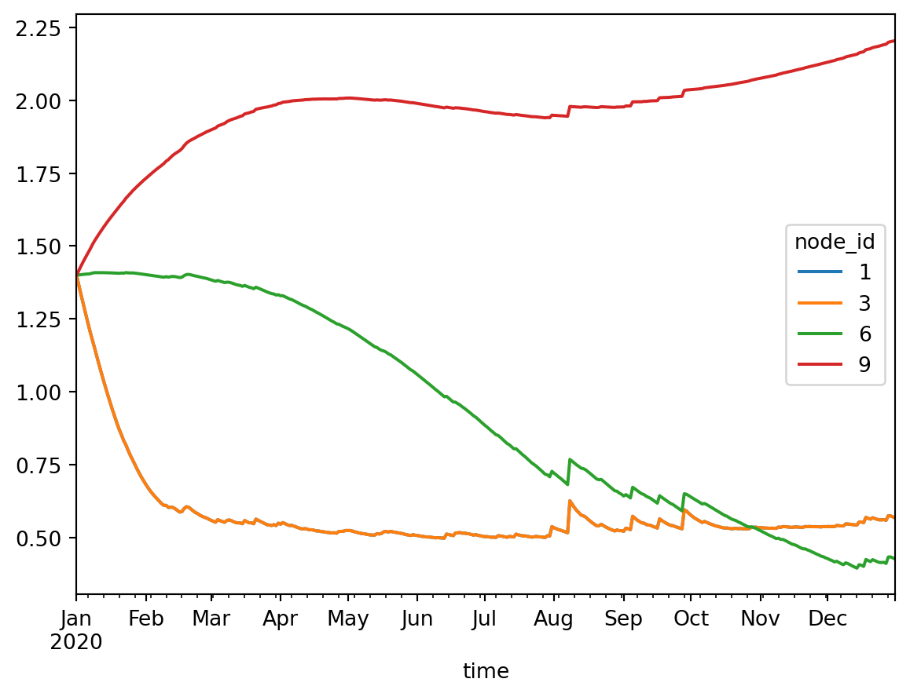
df_flow = pd.read_feather(datadir / "basic/results/flow.arrow", dtype_backend="pyarrow")
df_flow["link"] = list(zip(df_flow.from_node_id, df_flow.to_node_id))
df_flow["flow_m3d"] = df_flow.flow_rate * 86400
ax = df_flow.pivot_table(index="time", columns="link", values="flow_m3d").plot()
ax.legend(bbox_to_anchor=(1.3, 1), title="Link")
ax.set_ylabel("flow [m³day⁻¹]");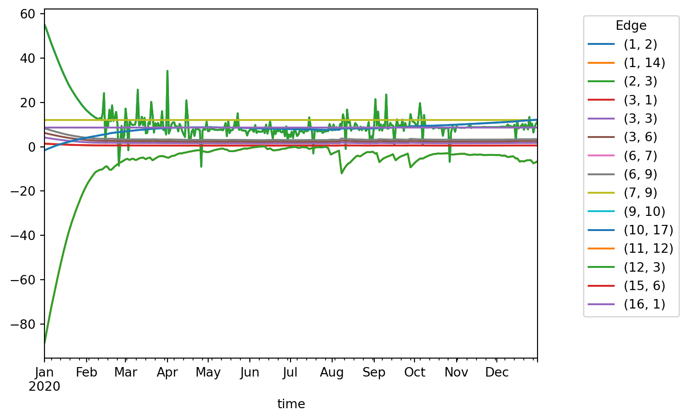
2 Model with discrete control
The model constructed below consists of a single basin which slowly drains trough a TabulatedRatingCurve, but is held within a range by two connected pumps. These two pumps together behave like a reversible pump. When pumping can be done in only one direction, and the other direction is only possible under gravity, use an Outlet for that direction.
Setup the basins:
model = Model(
starttime="2020-01-01",
endtime="2021-01-01",
crs="EPSG:4326",
solver=Solver(abstol=1e-6, reltol=1e-5),
)model.basin.add(
Node(1, Point(0.0, 0.0)),
[
basin.Profile(area=[1000.0, 1000.0], level=[0.0, 1.0]),
basin.State(level=[20.0]),
basin.Time(time=["2020-01-01", "2020-07-01"], precipitation=[0.0, 3e-6]),
],
)NodeData(node_id=1, node_type='Basin', geometry=<POINT (0 0)>)Setup the discrete control:
model.discrete_control.add(
Node(7, Point(1.0, 0.0)),
[
discrete_control.Variable(
compound_variable_id=1,
listen_node_id=1,
variable=["level"],
),
discrete_control.Condition(
compound_variable_id=1,
# min, max
greater_than=[5.0, 15.0],
),
discrete_control.Logic(
truth_state=["FF", "TF", "TT"],
control_state=["in", "none", "out"],
),
],
)NodeData(node_id=7, node_type='DiscreteControl', geometry=<POINT (1 0)>)The above control logic can be summarized as follows:
- If the level is above the maximum, activate the control state “out”;
- If the level is below the minimum, active the control state “in”;
- Otherwise activate the control state “none”.
Setup the pump:
model.pump.add(
Node(2, Point(1.0, 1.0)),
[pump.Static(control_state=["none", "in", "out"], flow_rate=[0.0, 2e-3, 0.0])],
)
model.pump.add(
Node(3, Point(1.0, -1.0)),
[pump.Static(control_state=["none", "in", "out"], flow_rate=[0.0, 0.0, 2e-3])],
)NodeData(node_id=3, node_type='Pump', geometry=<POINT (1 -1)>)The pump data defines the following:
| Control state | Pump #2 flow rate (m/s) | Pump #3 flow rate (m/s) |
|---|---|---|
| “none” | 0.0 | 0.0 |
| “in” | 2e-3 | 0.0 |
| “out” | 0.0 | 2e-3 |
Setup the level boundary:
model.level_boundary.add(
Node(4, Point(2.0, 0.0)), [level_boundary.Static(level=[10.0])]
)NodeData(node_id=4, node_type='LevelBoundary', geometry=<POINT (2 0)>)Setup the rating curve:
model.tabulated_rating_curve.add(
Node(5, Point(-1.0, 0.0)),
[tabulated_rating_curve.Static(level=[2.0, 15.0], flow_rate=[0.0, 2e-3])],
)NodeData(node_id=5, node_type='TabulatedRatingCurve', geometry=<POINT (-1 0)>)Setup the terminal:
model.terminal.add(Node(6, Point(-2.0, 0.0)))NodeData(node_id=6, node_type='Terminal', geometry=<POINT (-2 0)>)Setup links:
model.link.add(model.basin[1], model.pump[3])
model.link.add(model.pump[3], model.level_boundary[4])
model.link.add(model.level_boundary[4], model.pump[2])
model.link.add(model.pump[2], model.basin[1])
model.link.add(model.basin[1], model.tabulated_rating_curve[5])
model.link.add(model.tabulated_rating_curve[5], model.terminal[6])
model.link.add(model.discrete_control[7], model.pump[2])
model.link.add(model.discrete_control[7], model.pump[3])Let’s take a look at the model:
model.plot()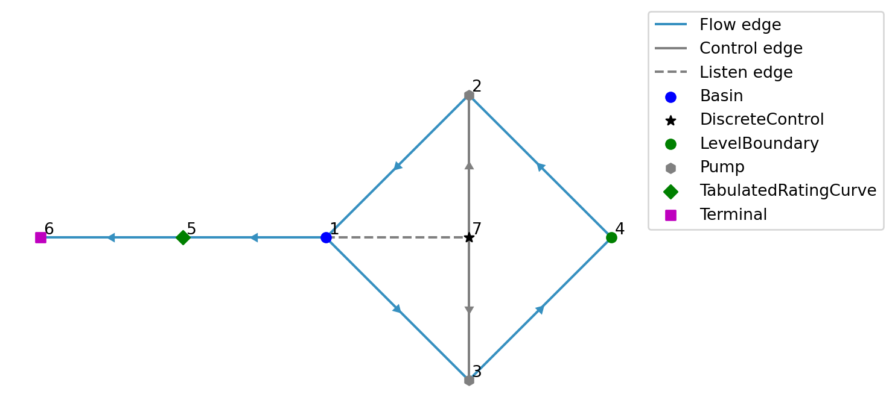
Listen links are plotted with a dashed line since they are not present in the “Link / static” schema but only in the “Control / condition” schema.
datadir = Path("data")
model.write(datadir / "level_range/ribasim.toml")PosixPath('data/level_range/ribasim.toml')Now run the model (for running instructions see here). After running the model, read back the results:
df_basin = pd.read_feather(
datadir / "level_range/results/basin.arrow", dtype_backend="pyarrow"
)
df_basin_wide = df_basin.pivot_table(
index="time", columns="node_id", values=["storage", "level"]
)
ax = df_basin_wide["level"].plot()
greater_than = model.discrete_control.condition.df.greater_than
ax.hlines(
greater_than,
df_basin.time[0],
df_basin.time.max(),
lw=1,
ls="--",
color="k",
)
ax.set_yticks(greater_than, ["min", "max"])
ax.set_ylabel("level")
plt.show()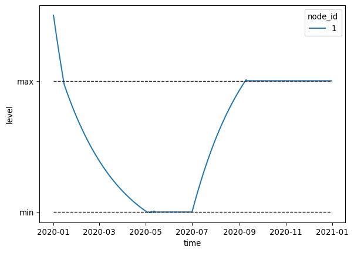
We see that in January the level of the basin is too high and thus water is pumped out until the maximum level of the desired range is reached. Then until May water flows out of the basin freely through the tabulated rating curve until the minimum level is reached. From this point until the start of July water is pumped into the basin in short bursts to stay within the desired range. At the start of July rain starts falling on the basin, which causes the basin level to rise until the maximum level. From this point onward water is pumped out of the basin in short bursts to stay within the desired range.
3 Model with PID control
Set up the model:
model = Model(starttime="2020-01-01", endtime="2020-12-01", crs="EPSG:4326")Setup the basins:
model.basin.add(
Node(2, Point(1.0, 0.0)),
[basin.Profile(area=[1000.0, 1000.0], level=[0.0, 1.0]), basin.State(level=[6.0])],
)NodeData(node_id=2, node_type='Basin', geometry=<POINT (1 0)>)Setup the pump:
model.pump.add(
Node(3, Point(2.0, 0.5)),
[pump.Static(flow_rate=[0.0])], # Will be overwritten by PID controller
)NodeData(node_id=3, node_type='Pump', geometry=<POINT (2 0.5)>)Setup the outlet:
model.outlet.add(
Node(6, Point(2.0, -0.5)),
[outlet.Static(flow_rate=[0.0])], # Will be overwritten by PID controller
)NodeData(node_id=6, node_type='Outlet', geometry=<POINT (2 -0.5)>)Setup flow boundary:
model.flow_boundary.add(
Node(1, Point(0.0, 0.0)),
[flow_boundary.Static(flow_rate=[1e-3])],
)NodeData(node_id=1, node_type='FlowBoundary', geometry=<POINT (0 0)>)Setup level boundary:
model.level_boundary.add(
Node(4, Point(3.0, 0.0)),
[level_boundary.Static(level=[5.0])],
)NodeData(node_id=4, node_type='LevelBoundary', geometry=<POINT (3 0)>)Setup PID control:
for node, proportional, integral in [
(Node(5, Point(1.5, 1.0)), -1e-3, -1e-7),
(Node(7, Point(1.5, -1.0)), 1e-3, 1e-7),
]:
pid_control_data = [
pid_control.Time(
time=[
"2020-01-01",
"2020-05-01",
"2020-07-01",
"2020-12-01",
],
listen_node_id=2,
target=[5.0, 5.0, 7.5, 7.5],
proportional=proportional,
integral=integral,
derivative=0.0,
)
]
model.pid_control.add(node, pid_control_data)Note that the coefficients for the pump and the outlet are equal in magnitude but opposite in sign. This way the pump and the outlet equally work towards the same goal, while having opposite effects on the controlled basin due to their connectivity to this basin.
Setup the links:
model.link.add(model.flow_boundary[1], model.basin[2])
model.link.add(model.basin[2], model.pump[3])
model.link.add(model.pump[3], model.level_boundary[4])
model.link.add(model.level_boundary[4], model.outlet[6])
model.link.add(model.outlet[6], model.basin[2])
model.link.add(model.pid_control[5], model.pump[3])
model.link.add(model.pid_control[7], model.outlet[6])Let’s take a look at the model:
model.plot()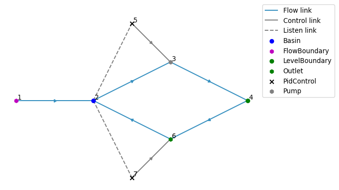
Write the model to a TOML and GeoPackage:
datadir = Path("data")
model.write(datadir / "pid_control/ribasim.toml")PosixPath('data/pid_control/ribasim.toml')Now run the model (for running instructions see here). After running the model, read back the results:
from matplotlib.dates import date2num
df_basin = pd.read_feather(
datadir / "pid_control/results/basin.arrow", dtype_backend="pyarrow"
)
df_basin_wide = df_basin.pivot_table(
index="time", columns="node_id", values=["storage", "level"]
)
ax = df_basin_wide["level"].plot()
ax.set_ylabel("level [m]")
# Plot target level
level_demands = model.pid_control.time.df.target.to_numpy()[:4]
times = date2num(model.pid_control.time.df.time)[:4]
ax.plot(times, level_demands, color="k", ls=":", label="target level")
pass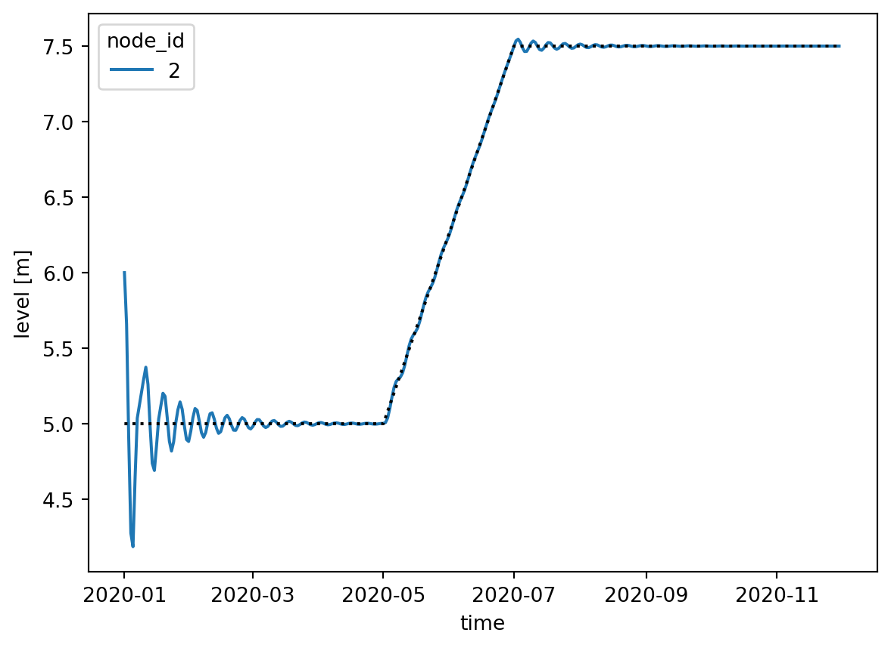
4 Model with allocation (user demand)
Setup a model:
model = Model(starttime="2020-01-01", endtime="2020-01-20", crs="EPSG:4326")Setup the basins:
basin_data = [
basin.Profile(area=[300_000.0, 300_000.0], level=[0.0, 1.0]),
basin.State(level=[1.0]),
]
model.basin.add(
Node(2, Point(1.0, 0.0), subnetwork_id=1),
basin_data,
)
model.basin.add(
Node(5, Point(3.0, 0.0), subnetwork_id=1),
basin_data,
)NodeData(node_id=5, node_type='Basin', geometry=<POINT (3 0)>)Setup the flow boundary:
model.flow_boundary.add(
Node(1, Point(0.0, 0.0), subnetwork_id=1), [flow_boundary.Static(flow_rate=[2.0])]
)NodeData(node_id=1, node_type='FlowBoundary', geometry=<POINT (0 0)>)Setup the linear resistance:
model.linear_resistance.add(
Node(4, Point(2.0, 0.0), subnetwork_id=1),
[linear_resistance.Static(resistance=[0.06])],
)NodeData(node_id=4, node_type='LinearResistance', geometry=<POINT (2 0)>)Setup the tabulated rating curve:
model.tabulated_rating_curve.add(
Node(7, Point(4.0, 0.0), subnetwork_id=1),
[tabulated_rating_curve.Static(level=[0.0, 0.5, 1.0], flow_rate=[0.0, 0.0, 2.0])],
)NodeData(node_id=7, node_type='TabulatedRatingCurve', geometry=<POINT (4 0)>)Setup the terminal:
model.terminal.add(Node(8, Point(5.0, 0.0), subnetwork_id=1))NodeData(node_id=8, node_type='Terminal', geometry=<POINT (5 0)>)Setup the users:
model.user_demand.add(
Node(6, Point(3.0, 1.0), subnetwork_id=1),
[
user_demand.Static(
demand=[1.5], return_factor=[0.0], min_level=[-1.0], demand_priority=[1]
)
],
)
model.user_demand.add(
Node(3, Point(1.0, 1.0), subnetwork_id=1),
[
user_demand.Time(
demand=[0.0, 1.0, 1.2, 1.2],
return_factor=[0.0, 0.0, 0.0, 0.0],
min_level=[-1.0, -1.0, -1.0, -1.0],
demand_priority=[1, 1, 2, 2],
time=2 * ["2020-01-01", "2020-01-20"],
)
],
)NodeData(node_id=3, node_type='UserDemand', geometry=<POINT (1 1)>)Setup the allocation:
model.allocation = Allocation(use_allocation=True, timestep=86400)Setup the links:
model.link.add(model.flow_boundary[1], model.basin[2])
model.link.add(model.basin[2], model.user_demand[3])
model.link.add(model.basin[2], model.linear_resistance[4])
model.link.add(model.linear_resistance[4], model.basin[5])
model.link.add(model.basin[5], model.user_demand[6])
model.link.add(model.basin[5], model.tabulated_rating_curve[7])
model.link.add(model.user_demand[3], model.basin[2])
model.link.add(model.user_demand[6], model.basin[5])
model.link.add(model.tabulated_rating_curve[7], model.terminal[8])Let’s take a look at the model:
model.plot()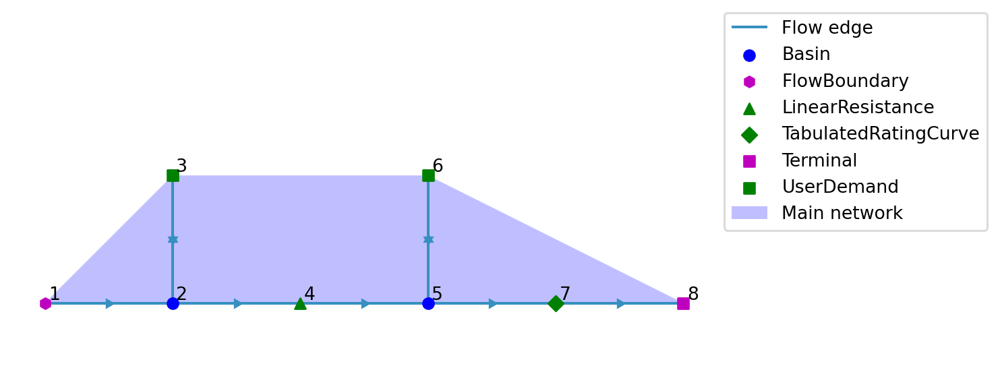
Write the model to a TOML and GeoPackage:
datadir = Path("data")
model.write(datadir / "allocation_example/ribasim.toml")PosixPath('data/allocation_example/ribasim.toml')Now run the model (for running instructions see here). After running the model, read back the results:
import matplotlib.ticker as plticker
df_allocation = pd.read_feather(
datadir / "allocation_example/results/allocation.arrow", dtype_backend="pyarrow"
)
df_allocation_wide = df_allocation.pivot_table(
index="time",
columns=["node_type", "node_id", "demand_priority"],
values=["demand", "allocated", "realized"],
)
df_allocation_wide = df_allocation_wide.loc[:, (df_allocation_wide != 0).any(axis=0)]
fig, axs = plt.subplots(1, 3, figsize=(8, 5))
df_allocation_wide["demand"].plot(ax=axs[0], ls=":")
df_allocation_wide["allocated"].plot(ax=axs[1], ls="--")
df_allocation_wide.xs(1, level="demand_priority", axis=1)["realized"].plot(
ax=axs[2], color=["C0", "C2", "C3"]
)
fig.tight_layout()
loc = plticker.MultipleLocator(2)
axs[0].set_ylabel("level [m]")
for ax, title in zip(axs, ["Demand", "Allocated", "Abstracted"]):
ax.set_title(title)
ax.set_ylim(0.0, 1.6)
ax.xaxis.set_major_locator(loc)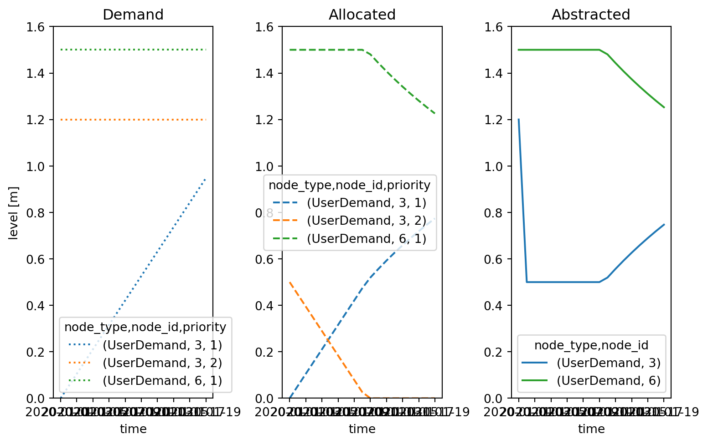
Some things to note about this plot:
The realized flow at the start time is not correct, as there is no realized flow yet. The given value is how much of its total demand a user can abstract in the physical layer.
No flow was allocated to UserDemand 13 so that is not plotted.
Abstraction is accumulated over all priorities per user.
df_basin = pd.read_feather(
datadir / "allocation_example/results/basin.arrow", dtype_backend="pyarrow"
)
df_basin_wide = df_basin.pivot_table(
index="time", columns="node_id", values=["storage", "level"]
)
ax = df_basin_wide["level"].plot()
ax.set_title("Basin levels")
ax.set_ylabel("level [m]")Text(0, 0.5, 'level [m]')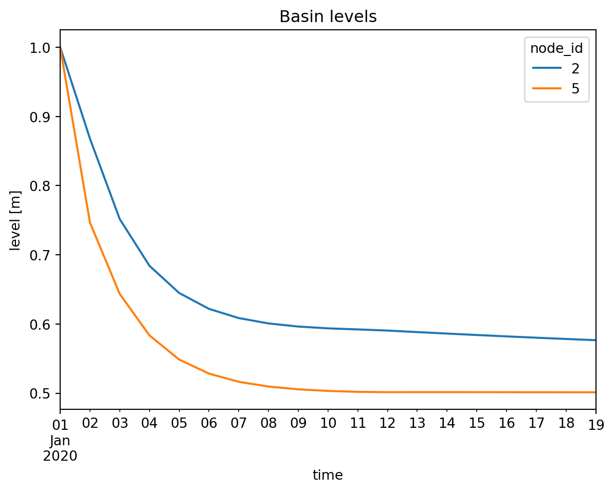
5 Model with allocation (basin supply/demand)
Setup a model:
model = Model(starttime="2020-01-01", endtime="2020-02-01", crs="EPSG:4326")Setup the basins:
basin_data = [
basin.Profile(area=[1e3, 1e3], level=[0.0, 1.0]),
basin.State(level=[0.5]),
]
model.basin.add(
Node(2, Point(1.0, 0.0), subnetwork_id=2),
[
*basin_data,
basin.Time(
time=["2020-01-01", "2020-01-16"],
drainage=[0.0, 0.0],
potential_evaporation=[0.0, 0.0],
infiltration=[0.0, 0.0],
precipitation=[1e-6, 0.0],
),
],
)
model.basin.add(
Node(5, Point(2.0, -1.0), subnetwork_id=2),
[
*basin_data,
basin.Static(
drainage=[0.0],
potential_evaporation=[0.0],
infiltration=[0.0],
precipitation=[0.0],
),
],
)NodeData(node_id=5, node_type='Basin', geometry=<POINT (2 -1)>)Setup the flow boundary:
model.flow_boundary.add(
Node(1, Point(0.0, 0.0), subnetwork_id=2), [flow_boundary.Static(flow_rate=[1e-3])]
)NodeData(node_id=1, node_type='FlowBoundary', geometry=<POINT (0 0)>)Setup level demand:
model.level_demand.add(
Node(4, Point(1.0, -1.0), subnetwork_id=2),
[level_demand.Static(demand_priority=[1], min_level=[1.0], max_level=[1.5])],
)NodeData(node_id=4, node_type='LevelDemand', geometry=<POINT (1 -1)>)Setup the users:
model.user_demand.add(
Node(3, Point(2.0, 0.0), subnetwork_id=2),
[
user_demand.Static(
demand_priority=[2], demand=[1.5e-3], return_factor=[0.2], min_level=[0.2]
)
],
)NodeData(node_id=3, node_type='UserDemand', geometry=<POINT (2 0)>)Setup the allocation:
model.allocation = Allocation(use_allocation=True, timestep=1e5)Setup the links:
model.link.add(model.flow_boundary[1], model.basin[2])
model.link.add(model.basin[2], model.user_demand[3])
model.link.add(model.level_demand[4], model.basin[2])
model.link.add(model.user_demand[3], model.basin[5])
model.link.add(model.level_demand[4], model.basin[5])Let’s take a look at the model:
model.plot()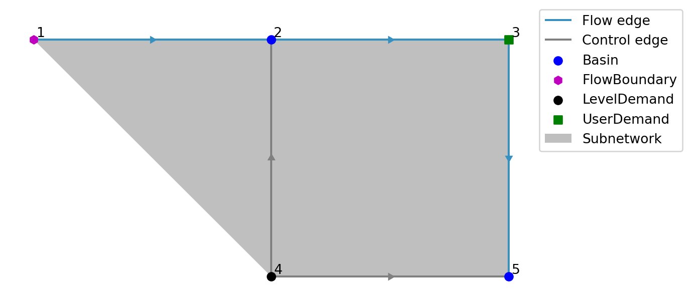
Write the model to a TOML and GeoPackage:
model.write(datadir / "level_demand/ribasim.toml")PosixPath('data/level_demand/ribasim.toml')Now run the model (for running instructions see here). After running the model, read back the results:
df_basin = pd.read_feather(
datadir / "level_demand/results/basin.arrow", dtype_backend="pyarrow"
)
df_basin = df_basin[df_basin.node_id == 2]
df_basin_wide = df_basin.pivot_table(
index="time", columns="node_id", values=["storage", "level"]
)
ax = df_basin_wide["level"].plot(ylabel="level [m]")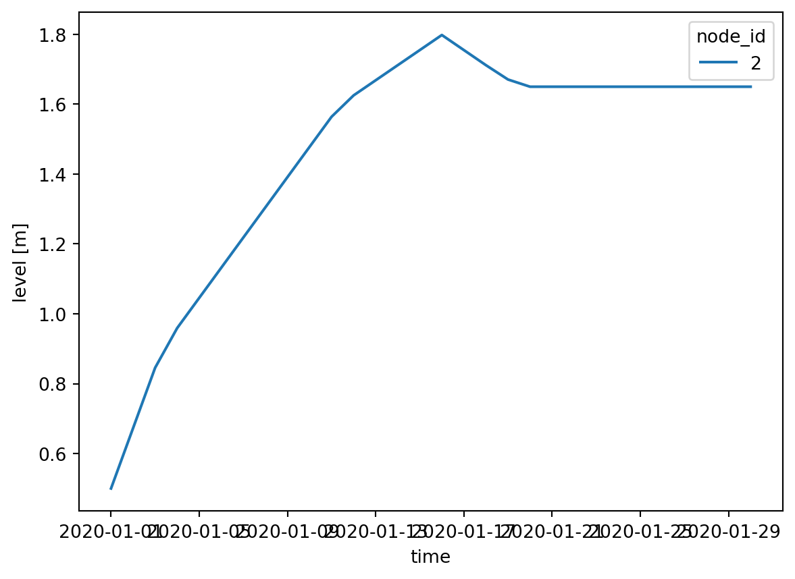
In the plot above, the line denotes the level of Basin #2 over time. The Basin level is a piecewise linear function of time, with several stages explained below.
Constants:
- \(d\): UserDemand #3 demand,
- \(\phi\): Basin #2 precipitation rate,
- \(q\): LevelBoundary flow.
Stages:
- In the first stage the Basin takes precedence so the UserDemand doesn’t abstract, hence the net change of Basin #2 is \(q + \phi\);
- In the second stage (and following stages) the Basin no longer has a positive demand, since precipitation provides enough water to get the Basin to its target level. The FlowBoundary flow gets fully allocated to the UserDemand, hence the net change of Basin #2 is \(\phi\);
- In the third stage the Basin enters its surplus stage, even though initially the level is below the maximum level. This is because the simulation anticipates that the current precipitation is going to bring the Basin level over its maximum level. The net change of Basin #2 is now \(q + \phi - d\);
- At the start of the fourth stage the precipitation stops, and so the UserDemand partly uses surplus water from the Basin to fulfill its demand. The net change of Basin #2 becomes \(q - d\).
- In the final stage the Basin is in a dynamical equilibrium, since the Basin has no supply so the user abstracts precisely the flow from the LevelBoundary.
6 Guidance of modelling a cascade of polder basins
Situation description: This example shows how to make a model for a given practical water system, which consists of a cascade of level control polder basins with inlet and outlet to the main systems. Note that alternative model layouts are feasible for the same water system, each having its positive items and drawbacks.
The polder system is composed of a sequence of level controlled polder basins with weirs inbetween each basin and an inlet and outlet to main system
model = Model(starttime="2020-01-01", endtime="2021-01-01", crs="EPSG:28992")All the polder basins are exposed to time varying forcings (precipitation, evaporation, drainage, infiltration) to mimic situations of water excess and water shortage.
In case of water excess, a pump in the most downstream polder will need to pump the surplus water to the main water system. In case of water shortage, an inlet at the most upstream polder will need to bring water into the cascase of polders. The main water system acts as a water source.
Model approach: All polder basins as well as the main water system are modelled with basin nodes. To let the system experience all 4 excess/shortage situation, forcing time series are made in a way that is adapting to them. Overall, assume that in one year, the system will experience precipitation (situation 1) in winter and early spring, precipitation shortage (situation 2) from late spring until early autumn. During situation 2, polder basin 4 will experience additional seepage (compoensating its shortage), and later polder basin 3 will also receive more seepage.
Setting up the basins:
time = pd.date_range(model.starttime, model.endtime)
day_of_year = time.day_of_year.to_numpy()
precipitation = np.zeros(day_of_year.size)
precipitation[0:90] = 1.72e-8
precipitation[330:366] = 1.72e-8
evaporation = np.zeros(day_of_year.size)
evaporation[130:270] = 2.87e-8
drainage = np.zeros(day_of_year.size)
drainage[120:270] = 0.4 * 2.87e-8
drainage_3 = drainage.copy()
drainage_3[210:240] = 17 * 2.87e-8
drainage_4 = drainage.copy()
drainage_4[160:240] = 13 * 2.87e-8
infiltration = np.zeros(day_of_year.size)
infiltration[0:90] = 5e-8
polder_profile = basin.Profile(area=[100, 100], level=[0.0, 3.0])
basin_time = [
basin.Time(
time=pd.date_range(model.starttime, model.endtime),
drainage=drainage,
potential_evaporation=evaporation,
infiltration=0.0,
precipitation=precipitation,
),
]
basin_time4 = [
basin.Time(
time=pd.date_range(model.starttime, model.endtime),
drainage=drainage_4,
potential_evaporation=evaporation,
infiltration=0.0,
precipitation=precipitation,
),
]
basin_time3 = [
basin.Time(
time=pd.date_range(model.starttime, model.endtime),
drainage=drainage_3,
potential_evaporation=evaporation,
infiltration=0.0,
precipitation=precipitation,
),
]
model.basin.add(
Node(1, Point(2.0, 0.0)),
[
basin.State(level=[2.5]),
basin.Profile(area=[1000, 1000], level=[0.0, 3.0]),
basin.Time(
time=pd.date_range(model.starttime, model.endtime),
drainage=0.0,
potential_evaporation=0.0,
infiltration=0.0,
precipitation=0.0,
),
],
)
model.basin.add(
Node(4, Point(0.0, -2.0)),
[basin.State(level=[1.5]), polder_profile, *basin_time],
)
model.basin.add(
Node(6, Point(0.0, -4.0)),
[basin.State(level=[1.0]), polder_profile, *basin_time],
)
model.basin.add(
Node(8, Point(2.0, -4.0)),
[basin.State(level=[1.5]), polder_profile, *basin_time3],
)
model.basin.add(
Node(10, Point(4.0, -4.0)),
[basin.State(level=[1.3]), polder_profile, *basin_time4],
)
model.basin.add(
Node(12, Point(4.0, -2.0)),
[basin.State(level=[0.1]), polder_profile, *basin_time],
)NodeData(node_id=12, node_type='Basin', geometry=<POINT (4 -2)>)After all the basins are defined the connecting component inbetween the basins needs to be determined. For polder basin 5 (node 12), the water level needs to be maintain at 0.0 meter. This means that either there should be no water in this basin, or the basin bottom is lower than the reference level, and the water level should be maintained at the reference level.
Since the water level of the main system is at 2.5 meter above the reference level a pump is needed to remove the water from polder basin 5.
Setup the pumps:
model.pump.add(
Node(13, Point(4.0, -1.0)),
[pump.Static(flow_rate=[0.5 / 3600])],
)NodeData(node_id=13, node_type='Pump', geometry=<POINT (4 -1)>)According to the description of situation 1 and 2, the water in one polder basin needs to be able to flow to the downstream basin if the current basin has too much water (i.e. the water level is above the setpoint) or if the downstream basin is below setpoint and needs more water. This could be modelled with an uncontrolled TabulatedRatingCurve node with Q=0 at the setpoint level (and Q rising when the level rises above setpoint) , or with an Outlet node where the min_upstream_level is specified at or just below the setpoint. In this example, we’ve chosen for the Outlet where we specify the minimum upstream level 5 cm below the setpoint. For example: the Outlet of polder basin 1 (node 4) is specified with a minimum upstream level of 1.95 meter.
Setup the outlets:
# Set up outlet
model.outlet.add(
Node(2, Point(0.0, -1.0)),
[outlet.Static(flow_rate=[2 * 0.5 / 3600], min_upstream_level=[0.0])],
)
model.outlet.add(
Node(5, Point(0.0, -3.0)),
[outlet.Static(flow_rate=[0.5 / 3600], min_upstream_level=[1.95])],
)
model.outlet.add(
Node(7, Point(1.0, -4.0)),
[outlet.Static(flow_rate=[0.5 / 3600], min_upstream_level=[1.45])],
)
model.outlet.add(
Node(9, Point(3.0, -4.0)),
[outlet.Static(flow_rate=[0.5 / 3600], min_upstream_level=[0.95])],
)
model.outlet.add(
Node(11, Point(4.0, -3.0)),
[outlet.Static(flow_rate=[0.5 / 3600], min_upstream_level=[0.45])],
)NodeData(node_id=11, node_type='Outlet', geometry=<POINT (4 -3)>)When using Outlets as connecting nodes, the flow over the Outlet needs to be controlled to maintain the water level at the setpoint. For this purpose we introduce local PidControllers, where the targets of the PidControllers are set to the setpoints. Disadvantage of this local control approach is the delay that is introduced to transport the ‘basin X has a shortage’ message upstream through the cascade to the inlet. Current functionality does not offer the capability for PidControl to take multiple observations into account when controlling the inlet. Combining multiple observations in one control is feasible with DiscreteControl. This could be an alternative approach to controlling the inlet for the cascading water system.
Setup the PID control:
pid_control_data = {
"proportional": [0.05],
"integral": [0.00],
"derivative": [0.0],
}
model.pid_control.add(
Node(3, Point(-1.0, -1.0)),
[pid_control.Static(listen_node_id=[4], target=[2.0], **pid_control_data)],
)
model.pid_control.add(
Node(14, Point(-1.0, -3.0)),
[pid_control.Static(listen_node_id=[6], target=[1.5], **pid_control_data)],
)
model.pid_control.add(
Node(15, Point(1.0, -3.0)),
[pid_control.Static(listen_node_id=[8], target=[1.0], **pid_control_data)],
)
model.pid_control.add(
Node(16, Point(3.0, -3.0)),
[pid_control.Static(listen_node_id=[10], target=[0.5], **pid_control_data)],
)NodeData(node_id=16, node_type='PidControl', geometry=<POINT (3 -3)>)Setup the links:
model.link.add(model.basin[1], model.outlet[2])
model.link.add(model.pid_control[3], model.outlet[2])
model.link.add(model.outlet[2], model.basin[4])
model.link.add(model.basin[4], model.outlet[5])
model.link.add(model.outlet[5], model.basin[6])
model.link.add(model.basin[6], model.outlet[7])
model.link.add(model.outlet[7], model.basin[8])
model.link.add(model.basin[8], model.outlet[9])
model.link.add(model.outlet[9], model.basin[10])
model.link.add(model.basin[10], model.outlet[11])
model.link.add(model.outlet[11], model.basin[12])
model.link.add(model.basin[12], model.pump[13])
model.link.add(model.pump[13], model.basin[1])
model.link.add(model.pid_control[14], model.outlet[5])
model.link.add(model.pid_control[15], model.outlet[7])
model.link.add(model.pid_control[16], model.outlet[9])To plot the model
model.plot()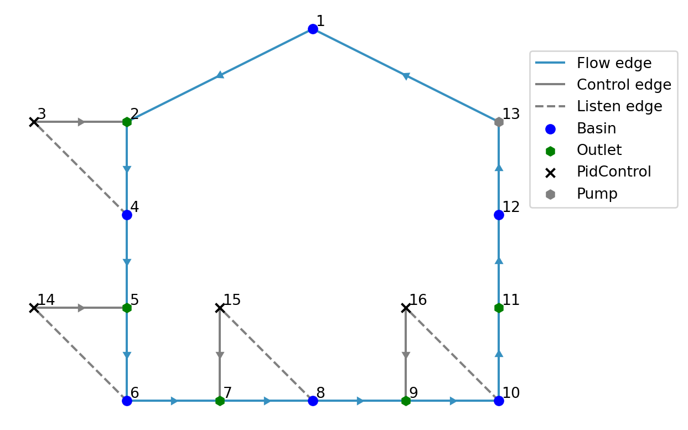
Write the model to a TOML file and run it in the Julia.
datadir = Path("data")
model.write(datadir / "local_pidcontrolled_cascade/ribasim.toml")PosixPath('data/local_pidcontrolled_cascade/ribasim.toml')Now run the model (for running instructions see here). After running the model, read back the result to plot the flow of each polder basin.
datadir_flow = datadir / "local_pidcontrolled_cascade/results/flow.arrow"
df_flow = pd.read_feather(datadir_flow, dtype_backend="pyarrow")
df_flow["link"] = list(zip(df_flow.from_node_id, df_flow.to_node_id))
df_flow["flow_m3d"] = df_flow.flow_rate * 86400
df_pivot = df_flow.pivot_table(index="time", columns="link", values="flow_m3d")Below graphs show the flow exchanged with the mainsystem (i.e. the inlet and the pump), and the flow of weirs inbetween the polder basins.
df_input = df_pivot.loc[:, [(1, 2), (13, 1)]]
ax = df_input.plot(ylim=[-1.0, 20.0])
ax.set_ylabel("flow [m³day⁻¹]")
df_weirs = df_pivot.loc[:, [(4, 5), (6, 7), (8, 9), (10, 11)]]
ax = df_weirs.plot(ylim=[-1.0, 15.0])
ax.set_ylabel("flow [m³day⁻¹]");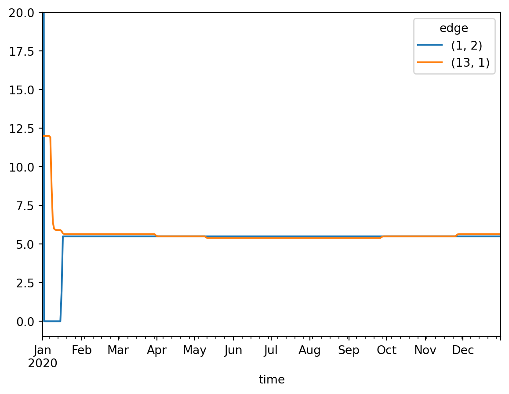
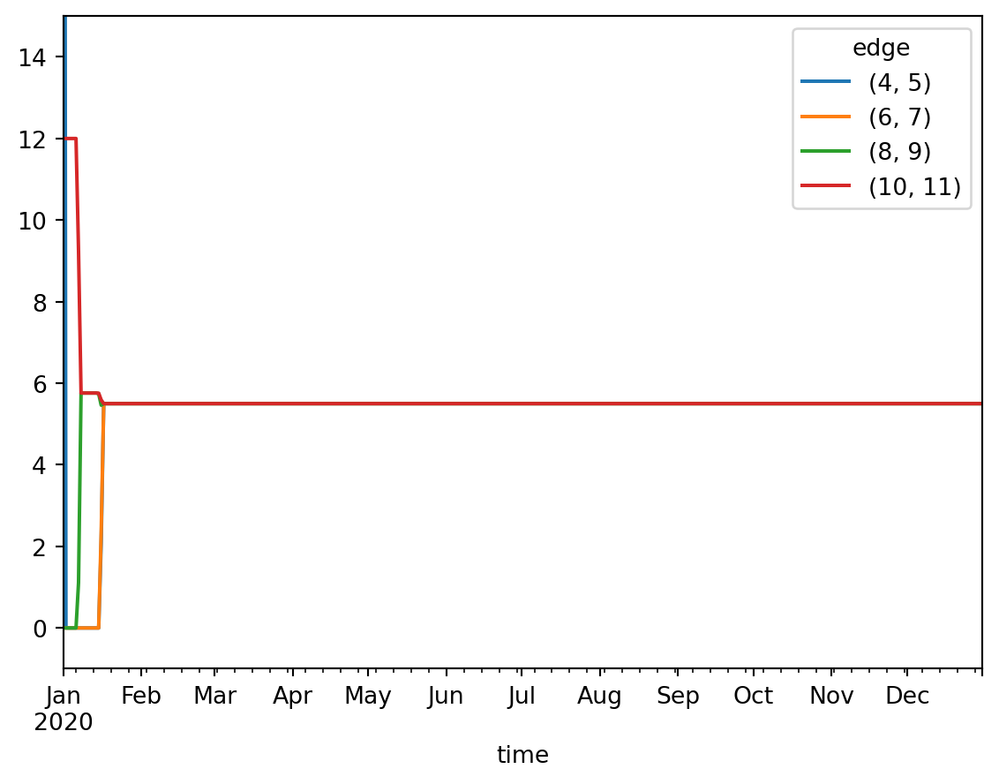
Below graph shows the vertical flux on each basin.
datadir_basin = datadir / "local_pidcontrolled_cascade/results/basin.arrow"
df_basin = pd.read_feather(datadir_basin, dtype_backend="pyarrow")
df_basin["vertical_flux"] = (
df_basin["precipitation"]
- df_basin["evaporation"]
+ df_basin["drainage"]
+ df_basin["infiltration"]
)
df_basin_wide = df_basin.pivot_table(
index="time", columns="node_id", values=["storage", "level", "vertical_flux"]
)
df_basin_wide["vertical_flux"] *= 86400
ax = df_basin_wide["vertical_flux"].plot()
ax.set_ylabel("vertical flux [m³day⁻¹]");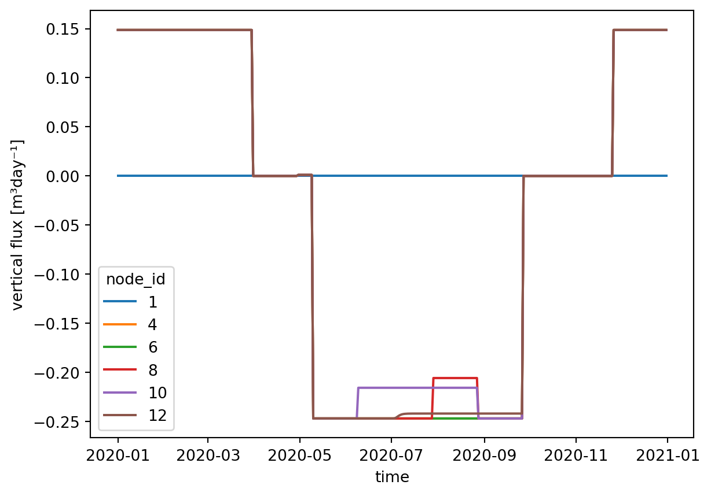
In the following graph, the water level of basins are shown. The five polder basins are given starting levels that are different from their setpoints. It can be observed that in the beginning, the water level are changing and approaching to the set points. Later when the water levels are stable, they will not be affected by the forcing.
ax = df_basin_wide["level"].plot()
ax.set_ylabel("level [m]");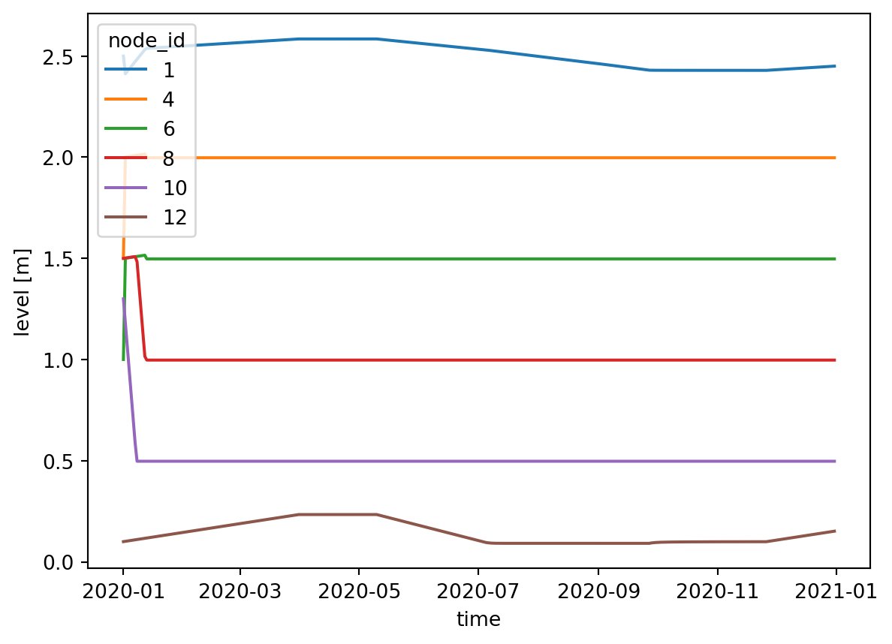
7 Model with continuous control
model = Model(starttime="2020-01-01", endtime="2021-01-01", crs="EPSG:28992")Set up the transient level boundary:
model.level_boundary.add(
Node(1, Point(0, 0)),
[
level_boundary.Time(
time=pd.date_range(
start="2020-01-01", end="2021-01-01", periods=100, unit="ms"
),
level=6.0 + np.sin(np.linspace(0, 6 * np.pi, 100)),
)
],
)NodeData(node_id=1, node_type='LevelBoundary', geometry=<POINT (0 0)>)Set up the linear resistance:
model.linear_resistance.add(
Node(2, Point(1, 0)), [linear_resistance.Static(resistance=[10.0])]
)NodeData(node_id=2, node_type='LinearResistance', geometry=<POINT (1 0)>)Set up the basin:
model.basin.add(
Node(3, Point(2, 0)),
[
basin.Profile(area=10000.0, level=[0.0, 1.0]),
basin.State(level=[10.0]),
],
)NodeData(node_id=3, node_type='Basin', geometry=<POINT (2 0)>)Set up the outlets:
model.outlet.add(Node(4, Point(3, 1)), [outlet.Static(flow_rate=[1.0])])
model.outlet.add(Node(5, Point(3, -1)), [outlet.Static(flow_rate=[1.0])])NodeData(node_id=5, node_type='Outlet', geometry=<POINT (3 -1)>)Set up the terminals:
model.terminal.add(Node(6, Point(4, 1)))
model.terminal.add(Node(7, Point(4, -1)))NodeData(node_id=7, node_type='Terminal', geometry=<POINT (4 -1)>)Set up the continuous control:
model.continuous_control.add(
Node(8, Point(2, 1)),
[
continuous_control.Variable(
listen_node_id=[2],
variable="flow_rate",
),
continuous_control.Function(
input=[0.0, 1.0],
output=[0.0, 0.6],
controlled_variable="flow_rate",
),
],
)
model.continuous_control.add(
Node(9, Point(2, -1)),
[
continuous_control.Variable(
listen_node_id=[2],
variable="flow_rate",
),
continuous_control.Function(
input=[0.0, 1.0],
output=[0.0, 0.4],
controlled_variable="flow_rate",
),
],
)NodeData(node_id=9, node_type='ContinuousControl', geometry=<POINT (2 -1)>)This defines:
- A
ContinuousControlnode with ID 1, which listens to the flow rate of theLinearResistancenode with ID 1, puts that trough the function \(f(x) = \max(0, 0.6x)\), and assigns the result to the flow rate of the node thisContinuousControlnode is controlling, which is defined by a (control) link; - A
ContinuousControlnode with ID 2, which listens to the flow rate of theLinearResistancenode with ID 1, puts that through the function \(f(x) = \max(0, 0.4x)\), and assigns the result to the flow rate of the node thisContinuousControlnode is controlling, which is defined by a (control) link.
model.link.add(model.level_boundary[1], model.linear_resistance[2])
model.link.add(model.linear_resistance[2], model.basin[3])
model.link.add(model.basin[3], model.outlet[4])
model.link.add(model.basin[3], model.outlet[5])
model.link.add(model.outlet[4], model.terminal[6])
model.link.add(model.outlet[5], model.terminal[7])
# Define which node is controlled by each continuous control node
model.link.add(model.continuous_control[8], model.outlet[4])
model.link.add(model.continuous_control[9], model.outlet[5])Let’s take a look at the model:
model.plot()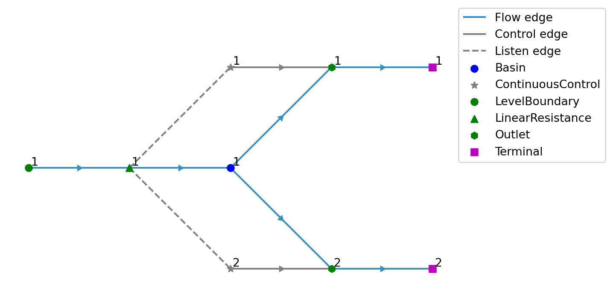
With this setup we want to split the flow coming into the basin into a 60% - 40% ratio.
Write the model to a TOML and GeoPackage:
toml_path = datadir / "outlet_continuous_control/ribasim.toml"
model.write(toml_path)PosixPath('data/outlet_continuous_control/ribasim.toml')Now run the model (for running instructions see here). After running the model, read back the results:
df_flow = pd.read_feather(
datadir / "outlet_continuous_control/results/flow.arrow", dtype_backend="pyarrow"
)
fig, ax = plt.subplots()
def plot_link_flow(from_node_type, from_node_id, to_node_type, to_node_id):
df_flow_filtered = df_flow[
(df_flow["from_node_id"] == from_node_id)
& (df_flow["to_node_id"] == to_node_id)
]
df_flow_filtered.plot(
x="time",
y="flow_rate",
ax=ax,
label=f"{from_node_type} #{from_node_id} → {to_node_type} #{to_node_id}",
)
plot_link_flow("LinearResistance", 1, "Basin", 1)
plot_link_flow("Basin", 1, "Outlet", 1)
plot_link_flow("Basin", 1, "Outlet", 2)
ax.set_ylabel("flow [m³s⁻¹]");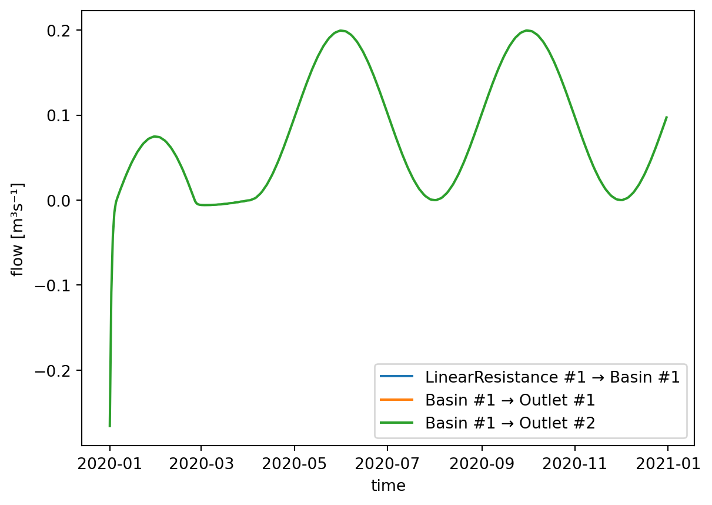